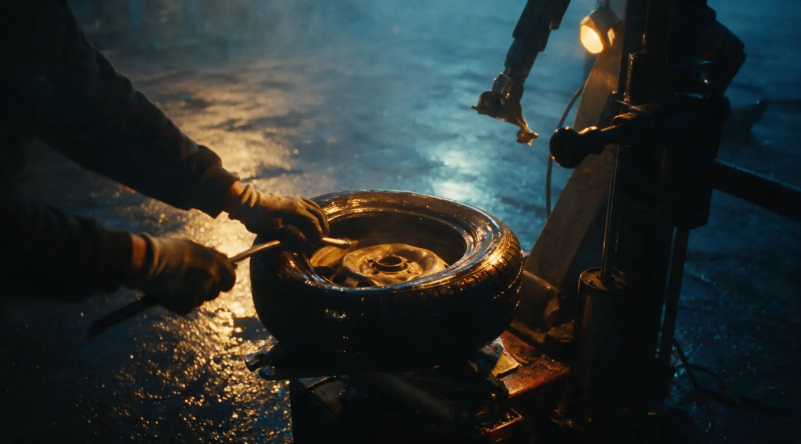
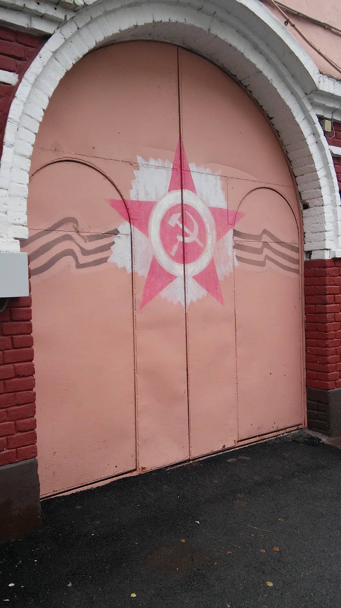

Шиномонтаж · Казань
Шиномонтаж на Жуковского: рядом с домом
Шиномонтаж с честным прайсом. Никто не накрутит цену на месте.

- Цена известна до приезда
- Балансировка и грузики в цене
- Приезжаете к своему времени, без очереди
Цена известна до приезда
Считаем по радиусу: чем больше колесо, тем дольше монтаж и балансировка.
Переобувка комплекта, легковые
- R13–R15от 2 400 ₽
- R16от 2 800 ₽
- R17–R18от 3 300 ₽
- R19–R20от 3 900 ₽
- R21–R22от 4 600 ₽
Остальное
- Комплект на дискахснять, поставить, отбалансироватьот 1 600 ₽
- Ремонт проколажгут или заплатка изнутриот 500 ₽
- Датчики давленияпроверка и обучение после переобувкиот 400 ₽
- Сезонное хранениекомплект маркируем и храним3 000 ₽ за сезон
Цены ориентировочные, средние по нише. В боевом сайте поставим ваши и уберём эту пометку.
Как проходит
- 01
Записались и выбрали время
Онлайн или в мессенджере, за минуту.
- 02
Приехали, машина сразу на подъёмник
Без очереди в боксе.
- 03
Каждое колесо – через стенд балансировки
Грузики уже в цене.
- 04
Через 30 минут отдаём машину и чек
Сумма та, что в прайсе.



Что обещаем
Балансировка и грузики в цене
Не дописываем в чек то, без чего переобувка не переобувка.
Испортили диск или болт – чиним за свой счёт
Динамометрический ключ на каждой машине.
Гарантия на ремонт прокола
Если заплатка не выдержала, переделаем бесплатно.
Приехали к своему времени – ждёте не дольше 10 минут
Это записано в правилах записи.
Отзывы с Google Карт
«Хороший шиномонтаж, заехал колеса посмотреть. Всё быстро посмотрели, плюс скидку сделали, всё замечательно. Ребята с опытом, всё вежливо объясняют, всё честно. Рекомендую всем, особенно если на смене будет Фарид. Качественно всё делает. 😎»
Михаил Быков · 3 года назад
«Хороший шиномонтаж практически в самом центре города, есть оплата картой, цены конкурентные, к примеру снятие+установка+балансировка четырёх колёс 15 диаметра стоила 720р. Диски штамповки.»
Герман Шос · 7 лет назад
«Хороший шиномонтаж.не самые интелегентные монтажники,но от них этого и не требуется.если есть место у них,то делают все быстро и качественно.за 4 года обслуживания у них,никаких проблем не было.перекидка 15 радиус 1200 ,средняя цена,а ведь…»
Владимир Ершов · 7 лет назад
Отзывы с карточки на Google Картах, без правок.
Контакты
- Адрес
- ул. Жуковского, 15, Казань
- Часы
- по записи
- Телефон
- 8 (927) 439-43-49